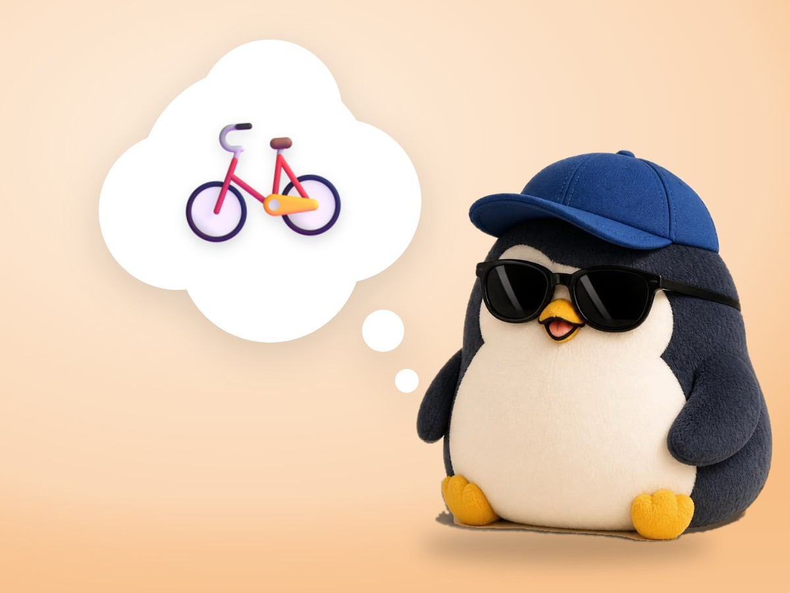

🧪 LAB · 試作 — AIが読書メモから一気に作った記事です。本番の一覧には出していません · 試作の一覧
🐧 EVERYDAY LIFE⚡ 18 SEC
Being bad at talking is like riding a bicycle: practice makes it easy 🚲

Not A Sickness
Maybe being bad at talking is not a sickness, but just a lack of practice.
Like A Bicycle
It is the same as riding a bicycle.
Wobbly At First
At first you wobble, but if you keep riding, one day you suddenly can ride.
⚡ TRY IT
Practice talking, and the bike rides straight
Each small talk is 1 practice ride. Watch the wobbly line.
Level 0
I am bad at talking… 😖
👋 Said "Hi."
☀️ Talked about the weather.
❓ Asked 1 question.
😊 Said "Thank you" with a smile.
🍰 Talked about my favorite food.
💬 Listened and said "Really?"
🐢 Talked slowly, with 1 breath at a time.
🎉 Talked for 5 minutes, and it was fun!
8 practices take off the training wheels.
🎉 The training wheels came off! One day, it suddenly works.
Magic Word
When you talk, the magic word for your breath, your moves, and your voice is "slowly."
📚 I learned this from the Japanese blog "Panda no Ondo".